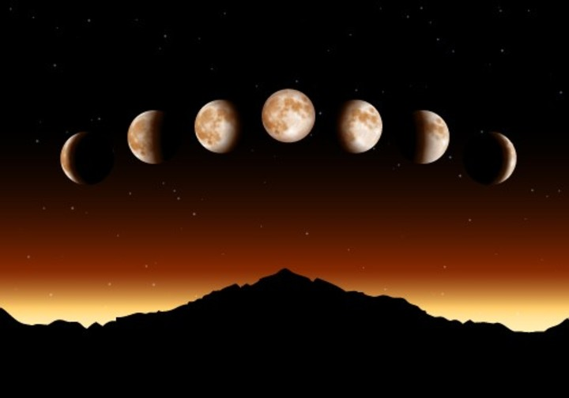

Las fases de la luna
Segun la disposicion de la Luna, la Tierra y el Sol la cara visible de la luna se ve iluminada una mayor o menor porcion

Fases de la luna
Luna Nueva
Cuarto creciente
Luna Llena
Cuarto menguante